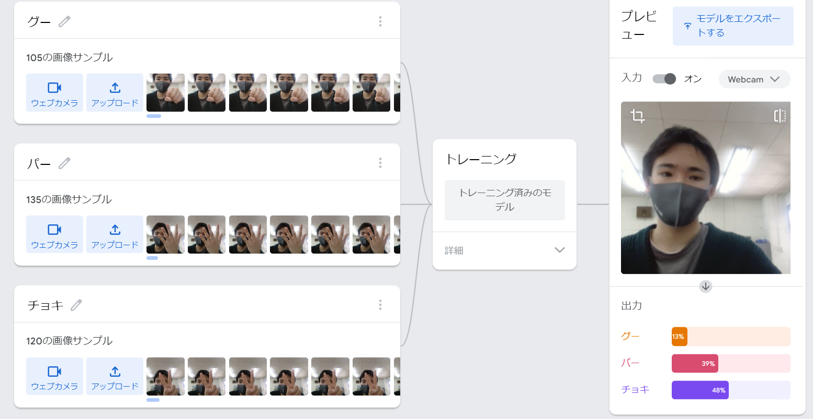

第2週目
2-1 １週目のレポートをHTMLで作る
１週目のレポート
1.内容
HTMLというプログラミング言語を使ってレポートを作成する。また、WEB上に公開し、他のデバイスからも閲覧できるようにした。
2.感想
HTML自体は冬休みの情報の宿題で、軽く学んだのでここに書かれているプログラムが理解でき少しうれしかった。
2-2 機械学習体験

1.内容
Teachable Machineを使ってAIにグー、チョキ、パーを学習させ判断させるようにする。
2.感想
グーを出しているのに判定ではパー100％となっていたり、何も出していないのにチョキ100％になっていたりと様々な問題はあったけど、
それらを含めてもAIの学習スピードは想像をはるかに超えるものでした。
2-3 VR（バーチャルリアリティー：Virtual Reality）会議室の体験
1.内容
VRゴーグルを使って VR（バーチャルリアリティー：Virtual Reality）会議室に入り基本的な操作方法やホワイトボードの書き方などを理解する。
2.感想
初めてVRゴーグルを使ってみて、バーチャルの世界はとても綺麗で楽しかったです。
特に、ホワイトボードに落書きをするとき現実では何もないのに仮想現実のほうではホワイトボードに触れている感覚があることに感動しました。